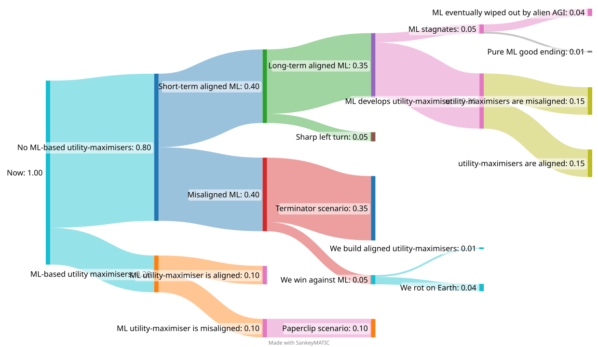

Aidan Ewart
Updated 04/05/2023
I thought I should formalise some (VERY vague, VERY WIP) predictions for The Future wrt. AI doom, as I think my intuitions diverge from the mainstream slightly (but not significantly).
Current Predictions for AI Doom
TL;DR: I don't think that the current ML/DL paradigm will result in robust, honest-to-Yudkowsky utility-maximisers, but I do think that a power-shift where power is given to ML-based AGI is likely in the coming decade. I also think that building a full-blown Yudkowskyian utility-maximiser is a Hard problem, which we might not see, even with AGI oversight, for a century or more. This presents a problem for the long-term future of Humanity, as we will no longer be in control when our dutch-bookable, heuristic-driven AGI overlords either attempt to create utility-maximising AGI, or when they encounter (alien) utility-maximisers.
Here's a Handy Diagram for my current predictions, which the rest of the post will attempt to justify:

On ML-Based Utility Maximisers
In "Reward is not the Optimisation Target", Alex Turner sets out a convincing argument that RL-based deep-learning systems will not turn out to be reward-maximisers, at least not with some serious hard work by RL engineers. Moreover, this model ("shard theory") seems to be quite predictive: human preferences, as optimised by evolution, seem to follow the predictions of shard theory, and shard-theoretic goals have been observed in the wild.
In light of this, I have updated to think that building a utility-maximiser is significantly harder than I previously thought; currently systems for targeting ML models are centered around RL, and I believe that the arguments Turner provides generalise to most near-future autonomous learning systems; it seems that the space of functions that ML systems as a whole can represent is dominated by heuristic-driven approximations to utility-maximisers, in line with shard theory.
Surely this is good, though, right?
Conditional on shard theory being a good model, alignment seems a lot easier; we no longer have to care about outer alignment, and instead should focus on "growing good cognition inside of the trained [RL] agent", which, as more of an engineering problem, seems significantly more tractible. Moreover, likelihoods of disasterous outcomes such as deceptive alignment seem much reduced if all ML agents will turn out to be fuzzy-preferenced and heuristic-driven. However, in the slightly longer term, we may encounter some of the problems associated with said fuzzy-preferenced, heuristic-driven models, most notably being the possibility of a sharp left turn. [TODO: sharp left turn ML agent]
If, however, we manage to build a sufficently aligned ML agent with approximately-human values, we may run into bother when the ML agent recursively self-improves into more optimising computational models (such as things-that-are-closer-to-utility-maximisers). I can see two obvious failure modes when a mostly-aligned